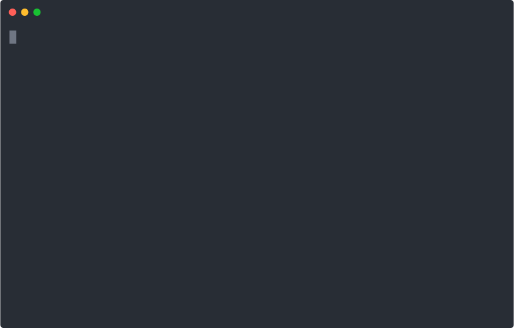

Build a text editor with Python and curses
This article was featured in Episode 221 of the PythonBytes podcast by Michael Kennedy and Brian Okken.

We’re going to build a command line text editor from scratch in Python. If you’d like to learn the most out of this, I’d recommend to code along. When we encounter problems, I’ll try to state them first before suggesting a solution. I encourage you to pause and give yourself about fifteen minutes to try to solve it first. If you’re still stuck, move along and compare the solution with your own approach. It’s also totally fine if you simply read through at your leisure.
One more thing, if you struggle to even get started, reach out to me on twitter or via email and I’ll try my best to help.
Let’s dive right in!
Create a curses application
We’ll use the curses library to avoid having to deal with low level issues like efficiently painting to the terminal screen and receiving user input. I’m going to skim over specifics about curses so we can focus on the editor itself. Please refer to the docs if you’d like to dig a little deeper.
Start with a barebones curses application. Create a file, editor.py, and begin with the following:
import curses
def main(stdscr):
while True:
k = stdscr.getkey()
if __name__ == "__main__":
curses.wrapper(main)curses.wrapper prepares your terminal and later restores its original state. It then passes an object that represents the terminal screen, called stdscr (short for standard screen like standard in, out, and error).
A way out
Problem 1. If you run this, the only way out will be a keyboard interrupt with Ctrl-c. That’s not great, add a cleaner way out.
Solution. stdscr.getkey blocks until a key is pressed, then stores it into the k variable, which is mapped to a sys.exit call to cleanly exit the application.
(Comments like # ... signal that lines from the previous snippet are unchanged. In this case, import curses remains the first line of editor.py, and the if __name__ == "__main__": block remains at the end of the file.)
# ...
import sys
def main(stdscr):
while True:
k = stdscr.getkey()
if k == "q":
sys.exit(0)
# ...Running the script should land you in a blank page. Then pressing q should get you back out.
$ python editor.pyLoad and view a file
Problem 2. Before we can edit text, we’ll need to be able to display it. Add a way for a user to specify a file. Load that file into memory and display it in the curses window.
Solution. Add an ArgumentParser that expects a single filename, reads the file’s contents to a variable. In the main loop, display each row of the file with stdscr.addstr.
import argparse
# ...
def main(stdscr):
parser = argparse.ArgumentParser()
parser.add_argument("filename")
args = parser.parse_args()
with open(args.filename) as f:
buffer = f.readlines()
while True:
stdscr.erase()
for row, line in enumerate(buffer):
stdscr.addstr(row, 0, line)
k = stdscr.getkey()
if k == "q":
sys.exit(0)
# ...The contents of the file are stored in-memory until they’re ready to be rewritten into a file, hence the name buffer. Text editor buffers have some interesting implementations, but we won’t get into that just yet.
Rerun the application, this time pointing it to a file:
$ python editor.py editor.pyThe double editor.py isn’t a typo. We’re editing the source of the editor! Which you should now be able to view in your terminal.
View the buffer through a window
Problem 3. Depending on the size of your screen, you may have seen the following error:
_curses.error: addwstr() returned ERRThe application is trying to draw the buffer beyond the length of the screen! In order to fix that, introduce a window with some width and height, and trim the rendered buffer to the width and height of the window.
Solution. Add a Window class with n_rows and n_cols attributes. In the main function, instantiate a Window with size (curses.LINES - 1, curses.COLS - 1); these are constants that hold the number of lines and columns in the current curses window. Then trim the buffer before rendering it in the main loop.
(The comment # ... def main(stdscr): hints that the text immediately following it belongs to the main function.)
# ...
class Window:
def __init__(self, n_rows, n_cols):
self.n_rows = n_rows
self.n_cols = n_cols
# ... def main(stdscr):
window = Window(curses.LINES - 1, curses.COLS - 1)
while True:
stdscr.erase()
for row, line in enumerate(buffer[:window.n_rows]):
stdscr.addstr(row, 0, line[:window.n_cols])
# ...Move the cursor through the buffer
Problem 4. The next step towards editing is cursor movement. Introduce a cursor, positioned at a given row and column. For now, initiate the cursor at (0, 0), then render the stdscr cursor at the current position. Don’t add any movement functionality just yet.
Solution. Create a Cursor class with attributes row and col, both default to 0. Instantiate a Cursor in main, and call stdscr.move to the current cursor position in the main loop:
# ...
class Cursor:
def __init__(self, row=0, col=0):
self.row = row
self.col = col
# ... def main(stdscr):
window = Window(curses.LINES - 1, curses.COLS - 1)
cursor = Cursor()
while True:
stdscr.erase()
for row, line in enumerate(buffer[:window.n_rows]):
stdscr.addstr(row, 0, line[:window.n_cols])
stdscr.move(cursor.row, cursor.col)
# ...The cursor should now be displayed at (0, 0).
Problem 5. Next, add cursor movement. Define a method for each direction: up, down, left, and right, each of which update the row or col as required. Then map the arrow keys to these cursor movement methods in the main loop.
Solution.
# ... class Cursor:
def up(self):
self.row -= 1
def down(self):
self.row += 1
def left(self):
self.col -= 1
def right(self):
self.col += 1
# ... def main(stdscr):
k = stdscr.getkey()
if k == "q":
sys.exit(0)
elif k == "KEY_UP":
cursor.up()
elif k == "KEY_DOWN":
cursor.down()
elif k == "KEY_LEFT":
cursor.left()
elif k == "KEY_RIGHT":
cursor.right()
# ...Rerun the application and give it a spin. It works great! Until…
Problem 6. It crashes when you try to move outside of the screen. We should probably restrict the cursor within the buffer.
(You may have already solved this in your solution to Problem 5. If so, well done, and feel free to skip ahead!)
Solution. Update the movement methods to only move if they’ll remain within the buffer. Since cursor movement now depends on buffer properties, we also need to pass the buffer through as an argument:
# ... class Cursor:
def up(self):
if self.row > 0:
self.row -= 1
def down(self, buffer):
if self.row < len(buffer) - 1:
self.row += 1
def left(self):
if self.col > 0:
self.col -= 1
def right(self, buffer):
if self.col < len(buffer[self.row]):
self.col += 1
# ... def main(stdscr):
k = stdscr.getkey()
if k == "q":
sys.exit(0)
elif k == "KEY_UP":
cursor.up()
elif k == "KEY_DOWN":
cursor.down(buffer)
elif k == "KEY_LEFT":
cursor.left()
elif k == "KEY_RIGHT":
cursor.right(buffer)
# ...Problem 7. Almost there. Cursor movement should now mostly work, except that when moving to a shorter line the cursor will float outside the buffer. Fix that.
Solution. Restrict the cursor’s col to be within the line we move to:
# ... class Cursor:
def up(self, buffer):
if self.row > 0:
self.row -= 1
self._clamp_col(buffer)
def down(self, buffer):
if self.row < len(buffer) - 1:
self.row += 1
self._clamp_col(buffer)
def _clamp_col(self, buffer):
self.col = min(self.col, len(buffer[self.row]))
# ... def main(stdscr):
k = stdscr.getkey()
if k == "q":
sys.exit(0)
elif k == "KEY_UP":
cursor.up(buffer)
# ...
# ...Problem 8. This works alright, but it’s not the most convenient. Often when you move to a shorter line and back to the original line, you mean for the cursor to be as it was before you moved at all. Implement this functionality.
Solution. We can achieve this by introducing a new variable, _col_hint, that keeps track of the last col explicitly moved to, and instead use that to reset the column after line movements.
Whenever col is set by a horizontal movement, it should also update _col_hint to the same value. That value should be used when clamping. We can use a property and property setter to implement that.
# ...
class Cursor:
def __init__(self, row=0, col=0, col_hint=None):
self.row = row
self._col = col
self._col_hint = col if col_hint is None else col_hint
@property
def col(self):
return self._col
@col.setter
def col(self, col):
self._col = col
self._col_hint = col
# ...
def _clamp_col(self, buffer):
self._col = min(self._col_hint, len(buffer[self.row]))
# ...Note that _clamp_col sets the internal variable _col directly, avoiding the setter thus not resetting _col_hint.
Problem 9. There’s one final addition that should also improve the user experience. If the cursor is moved horizontally outside the buffer, wrap to the start (or end) of the next (or previous) line.
Solution.
# ... class Cursor:
def left(self, buffer):
if self.col > 0:
self.col -= 1
elif self.row > 0:
self.row -= 1
self.col = len(buffer[self.row])
def right(self, buffer):
if self.col < len(buffer[self.row]):
self.col += 1
elif self.row < len(buffer) - 1:
self.row += 1
self.col = 0
# ... def main(stdscr):
elif k == "KEY_LEFT":
cursor.left(buffer)
# ...Give it a spin. All should work well except when the cursor moves outside of the window.
Scroll the window to the cursor
Problem 10. We currently have no way of seeing any part of the buffer that’s outside the window. Worse still, we can also move the cursor outside of the window! Scroll the window vertically as the cursor moves. Don’t worry about horizontal scrolling for now.
Solution. Add row and col attributes to the Window that track the current position of the window as it scrolls through the buffer (specifically, the position of the top-left of the window). Then add methods to scroll the window vertically.
Having learned from cursor movement, we’ll be sure to do the necessary checks the first time round: only scroll up if we’re not already at the top of the buffer and if the cursor exceeds the top of the window, and similarly for downward scrolling. In the main loop, scroll the window after moving the cursor. And finally, update where we start slicing the buffer when rendering.
# ...
class Window:
def __init__(self, n_rows, n_cols, row=0, col=0):
self.n_rows = n_rows
self.n_cols = n_cols
self.row = row
self.col = col
@property
def bottom(self):
return self.row + self.n_rows - 1
def up(self, cursor):
if cursor.row == self.row - 1 and self.row > 0:
self.row -= 1
def down(self, buffer, cursor):
if cursor.row == self.bottom + 1 and self.bottom < len(buffer) - 1:
self.row += 1
# ... def main(stdscr):
while True:
stdscr.erase()
for row, line in enumerate(buffer[window.row:window.row + window.n_rows]):
stdscr.addstr(row, 0, line)
stdscr.move(cursor.row, cursor.col)
# ...
elif k == "KEY_UP":
cursor.up()
window.up(cursor)
elif k == "KEY_DOWN":
cursor.down(buffer)
window.down(buffer, cursor)
elif k == "KEY_LEFT":
cursor.left()
window.up(cursor)
elif k == "KEY_RIGHT":
cursor.right(buffer)
window.down(buffer, cursor)
# ...Note that left and right movement may require vertical scrolling since the cursor may be wrapped to the previous or next line.
The last crucial piece is to translate the cursor’s actual position, which is in terms of the buffer, to be in terms of what’s displayed: the window. Add a translate method to the window, and use it to render the cursor:
# ... class Window:
def translate(self, cursor):
return cursor.row - self.row, cursor.col - self.col
# ... def main(stdscr):
while True:
stdscr.erase()
for row, line in enumerate(buffer[window.row:window.row + window.n_rows]):
stdscr.addstr(row, 0, line)
stdscr.move(*window.translate(cursor))
# ...Problem 11. We’ve addressed vertical scrolling, but long lines still present an issue. There are two ways we might address long lines. We could either scroll the entire window with the cursor, as we did for vertical scrolling. This is how most editors work. Or we could scroll only the selected line to follow the cursor, which as far as I know is only implemented by nano. Let’s implement the second approach.
The desired behaviour is that when the cursor exceeds some margin away from the right edge of the window, the window should be moved one page to the right, and similarly for the left side.
Solution. Add a horizontal_scroll method to Window that implements this, and call it after any cursor movements in the main loop.
# ... class Window:
def horizontal_scroll(self, cursor, left_margin=5, right_margin=2):
n_pages = cursor.col // (self.n_cols - right_margin)
self.col = max(n_pages * self.n_cols - right_margin - left_margin, 0)
# ... def main(stdscr):
elif k == "KEY_UP":
cursor.up()
window.up(cursor)
window.horizontal_scroll(cursor)
elif k == "KEY_DOWN":
cursor.down(buffer)
window.down(buffer, cursor)
window.horizontal_scroll(cursor)
elif k == "KEY_LEFT":
cursor.left()
window.up(cursor)
window.horizontal_scroll(cursor)
elif k == "KEY_RIGHT":
cursor.right(buffer)
window.down(buffer, cursor)
window.horizontal_scroll(cursor)
# ...Next, update how the buffer renders long lines by including characters that indicate that a given line has more content on the left («) or right (»).
# ... def main(stdscr):
while True:
stdscr.erase()
for row, line in enumerate(buffer[window.row:window.row + window.n_rows]):
if row == cursor.row - window.row and window.col > 0:
line = "«" + line[window.col + 1:]
if len(line) > window.n_cols:
line = line[:window.n_cols - 1] + "»"
stdscr.addstr(row, 0, line)
stdscr.move(*window.translate(cursor))
# ...Edit the buffer
And now to the key ingredient, actually editing text!
Start by adding a Buffer class that wraps the list of lines. Implement __len__ and __getitem__ so that any dependents of buffer needn’t change. Set buffer to a Buffer instance instead of the current list of lines.
# ...
class Buffer:
def __init__(self, lines):
self.lines = lines
def __len__(self):
return len(self.lines)
def __getitem__(self, index):
return self.lines[index]
# ... def main(stdscr):
parser = argparse.ArgumentParser()
parser.add_argument("filename")
args = parser.parse_args()
with open(args.filename) as f:
buffer = Buffer(f.read().splitlines())
# ...Now’s a good time for a tiny refactor: extract len(buffer) - 1 to the Buffer.bottom property. You might argue that this isn’t worth being extracted. My reasoning is that the last column in a line is len(buffer[row]) whereas the last row in a buffer is len(buffer) - 1, and I can never get it right the first time!
I think it’s good to be aware of the kinds of bugs you tend to introduce, rather than to always follow a dogmatic approach. It also has a nice symmetry with Window.bottom, though that’s less important. It might be worth considering doing similar for len(buffer[row]), but I find that easy to remember and already concise.
# ... class Buffer:
@property
def bottom(self):
return len(self) - 1
# ... class Cursor:
def down(self, buffer):
if self.row < buffer.bottom:
self.row += 1
self._clamp_col(buffer)
# ...
def right(self, buffer):
if self.col < len(buffer[self.row]):
self.col += 1
elif self.row < buffer.bottom:
self.row += 1
self.col = 0
# ... class Window:
def down(self, buffer, cursor):
if cursor.row == self.bottom + 1 and self.bottom < buffer.bottom:
self.row += 1
# ...We’ll be adding three methods to the buffer: insert, split, and delete.
Insert a string into the buffer
Problem 12. If an unmapped key is pressed, insert it into the buffer at the current cursor position.
Solution.
Since the buffer stores text as a list of lines, and the cursor moves through a two-dimensional space, there’s a tiny bit of work we need to do to insert text at a given cursor.
Pop the line under the cursor, split it at the cursor, and concatenate the before part, the string to be inserted, and the after part. Insert the concatenated string into the buffer at the cursor. And as usual, call the method in the main loop. This case differs slightly from previous, in that we’ll map all unmapped keys to Buffer.insert. That’s probably not ideal, for example, a user might enter Ctrl-i which will write ^I to the buffer, but it’ll do for now.
# ... class Buffer:
def insert(self, cursor, string):
row, col = cursor.row, cursor.col
current = self.lines.pop(row)
new = current[:col] + string + current[col:]
self.lines.insert(row, new)
# ... def main(stdscr):
if k == "q":
sys.exit(0)
# ...
else:
buffer.insert(cursor, k)
# ...Test it out. It’ll insert text, but won’t move the cursor after the inserted text. All we need to do is move right for each inserted character. Since we already have a command to move the cursor right (and scroll the window as needed), now’s the time to extract a right function and re-use it:
# ...
def right(window, buffer, cursor):
cursor.right(buffer)
window.down(buffer, cursor)
window.horizontal_scroll(cursor)
# ... def main(stdscr):
elif k == "KEY_RIGHT":
right(window, buffer, cursor)
# ...
else:
buffer.insert(cursor, k)
for _ in k:
right(window, buffer, cursor)
# ...Split a line in the buffer
Probem 12. If you hit enter, you won’t get the expected result, which is to split the line at the cursor.
Solution. Implement split as below, similar to insert.
# ... class Buffer:
def split(self, cursor):
row, col = cursor.row, cursor.col
current = self.lines.pop(row)
self.lines.insert(row, current[:col])
self.lines.insert(row + 1, current[col:])
# ... def main(stdscr):
elif k == "\n":
buffer.split(cursor)
right(window, buffer, cursor)
# ...Delete a character from the buffer
Problem 13. As in the previous section, hitting delete or backspace won’t give the expected result. Start by implementing a delete command, bound to the delete key, that deletes the character under the cursor.
Solution. Add a delete method. If the cursor is at the last position in the buffer, don’t do anything. Otherwise, there are two options. Either the cursor is inside a line, then follow similar logic to insert but instead of adding a string remove a character. Or the cursor is at the end of the line, then join the current line to the next.
# ... class Buffer:
def delete(self, cursor):
row, col = cursor.row, cursor.col
if (row, col) < (self.bottom, len(self[row])):
current = self.lines.pop(row)
if col < len(self[row]):
new = current[:col] + current[col + 1:]
self.lines.insert(row, new)
else:
next = self.lines.pop(row)
new = current + next
self.lines.insert(row, new)
# ... def main(stdscr):
elif k in ("KEY_DELETE", "\x04"):
buffer.delete(cursor)
# ...On MacOS, curses doesn’t correctly decode the backspace and delete keys, they’re instead returned as \x7f and \x04 respectively. I haven’t found a satisfactory answer for why this is the case. If you know, I’d love to hear!
Problem 14. Implement backspace.
Solution. Backspace can be implemented by moving left and then deleting. Just as we extracted a right function for insertion, we’ll extract a left function here:
# ...
def left(window, buffer, cursor):
cursor.left(buffer)
window.up(cursor)
window.horizontal_scroll(cursor)
# ... def main(stdscr):
elif k in ("KEY_BACKSPACE", "\x7f"):
if (cursor.row, cursor.col) > (0, 0):
left(window, buffer, cursor)
buffer.delete(cursor)
# ...And look at that! You’ve built a minimal yet functional text editor.
Problem 15. There’s one key piece of functionality still missing: saving the edited file. I’ll leave that as the final unsolved problem.
What next?
I hope you enjoyed working through this, and that you learned something new. If you did or if you have any other questions or comments, feel free to reach out to me on twitter or via email.
If this whet your appetite and you’re looking for more, here are some exercises you might find interesting, in roughly increasing difficulty:
- Remap cursor movement to
Ctrl-p(up),Ctrl-n(down),Ctrl-b(left), andCtrl-f(right). - Add page up and page down commands.
- Add a command to save the buffer to a file.
- Rewrite horizontal scrolling to move the entire window rather than only the current line.
- Add a status line to the bottom of the window that displays the name of the file being edited and the current cursor position.
- Add commands to move one word left or right.
- If the buffer is modified and not yet saved, print a message in the status line and don’t let the user exit. Add a force exit command as well.
- Rewrite the application so that there’s no mutable state. I’ve found dataclasses with the
dataclass.replacefunction a convenient way to write applications around immutable objects.
Credits
Many thanks to the following people and projects for sharing their great work, upon which a lot of this was based!
- Many thanks to Pavel Spirhanzl and Alexandre Pajak for their keen eyes in identifying bugs in early versions.
- Gary Bernhardt’s Text Editor From Scratch screencast.
- Anthony Sottile’s babi.
- nano source.
- Emacs source. In my opinion, the best way to explore the source is through Emacs’ built-in help commands.